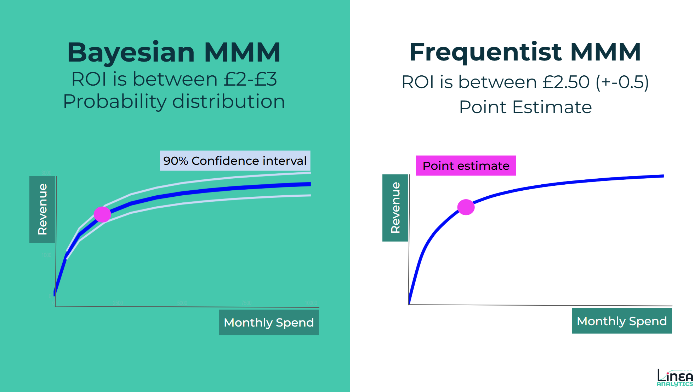
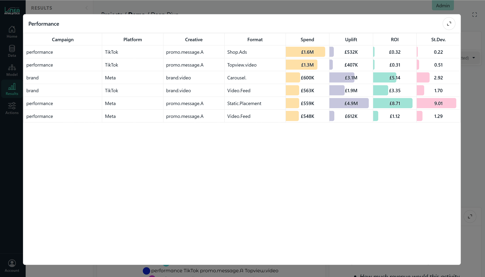

As marketing measurement undergoes a shift away from flawed tracking toward incremental impact, Marketing Mix Modelling (MMM) has reclaimed its spot as the gold standard for strategic decision-making.
At Linea Analytics, we have been pioneering always-on MMM using Bayesian frameworks to provide the speed, transparency, and depth required by modern brands.
Let's dive into what Bayesian MMM is and the strengths and weaknesses of this approach.
Bayesian Marketing Mix Modelling is a statistical approach that combines historical data with "prior" knowledge to estimate the impact of marketing activities. The Bayesian part is a distinct form of statistics.
Unlike traditional methods that only look at the data in a vacuum, a Bayesian model allows us to incorporate existing expertise into the mathematical framework, this can include:
This helps create a more robust "posterior" distribution, hopefully reflecting a more accurate view of media performance.
Most traditional models use Ordinary Least Squares (OLS) or frequentist regressions, which focus solely on minimising errors between predicted and actual sales.
Overlap:
Difference:

We have built our own approach using the Stan library. It is a state-of-the-art C++ library for Bayesian inference. This allows us to run complex, high-performance simulations that "free" MMM tools often struggle with, ensuring your model isn't just a best guess but a statistically rigorous calculation.
We built our own Bayesian approach, rather than using an open source framework, so that we were both building the car and driving the car - to use a metaphor. We believe that when you combine both elements, you can increase the quality of the outputs and produce more tailored models for our clients. It is, to continue the metaphor, easier to know how to get the most use out of the car when you know how it is built.
Our bespoke approach allows us to measure the multiplicative relationship between media and external factors. Rather than assuming media simply "adds" sales, we recognise that media multiplies the effect of other drivers.
For example, your TV ad is more effective during a peak seasonal period than in a quiet month; our models capture this synergy. Too often, measurement doesn’t reflect this real-world factor, meaning that brands over/ under invest during peak seasonal periods.
A key reason for building our own modelling infrastructure is to answer one of MMM’s key questions: How do you get deeper insights within a channel? By this I mean:
✅CAC/ CPA of Meta but also
✅CAC/ CPA of Meta by placement and creative

Our Bayesian modelling infrastructure offers two clear advantages for gaining this depth of insight:
By using our standardised modelling infrastructure, we are able to uncover greater depth of insight to help drive action from measurement
Traditional MMM is often a "once-a-year" exercise, but at Linea, we’ve pioneered Always-on MMM. Building our own modelling framework to sit alongside data ingestion, reporting and tools to action, allows us to own the full MMM process at speed.
With this control means we can move at a pace allowing for faster building of models with greater accuracy.
For brands, understanding incrementality is a step forward from last click measurement. But a Bayesian MMM is the best approach, here’s why:
Let's be clear, Bayesian isn’t all sunny uplands! Three things for builders to consider:
It requires significant data science expertise to set up the initial "priors" correctly without introducing bias. Additionally, many teams struggle with how to interpret the model. For example, some statistical tests that model builders are used to are not available.
These models take longer to run than simple regressions, which is why Linea uses automation to ensure they remain "always-on". For some teams, building frequentist models, you run multiple iterations of the models. A Bayesian modelling framework doesn’t work like that. Some teams we have spoken with set up models to run overnight. We think that is too slow and often that comes from over specified model set-up.
Let's take, for example, the default model in Meridian. This will run in an hour, but do you need the split by Geo, the daily update or the time varying base? If you don’t the model can be run in sub 2 mins.
If you don’t know how the "black box" of the model is made then how are you going to explain that to stakeholders? When a model validation is a mixture of statistics and communication, model builders must be able to drive confidence in both.
At Linea, we solve these challenges through transparency and partnership:
For brands looking to further explore using a Bayesian MMM approach, we are on hand to offer support. Through our bespoke model approach, combined with data ingestion and reporting we are able to deliver an always-on MMM framework.
We often help brands that have tried "free" MMM tools (like Meridian) but found the results confusing. We bridge the gap between data science and marketing, auditing models to ensure they reflect the true marketing context of your business.
Have any project on mind?
For immediate support: